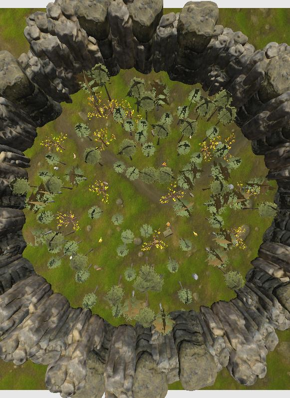
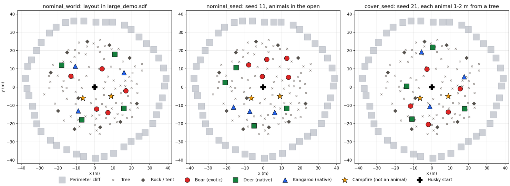
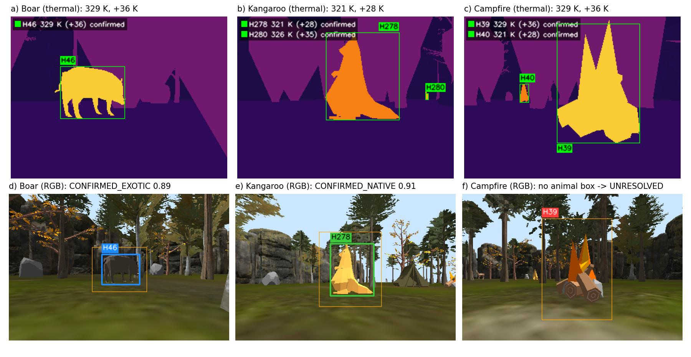
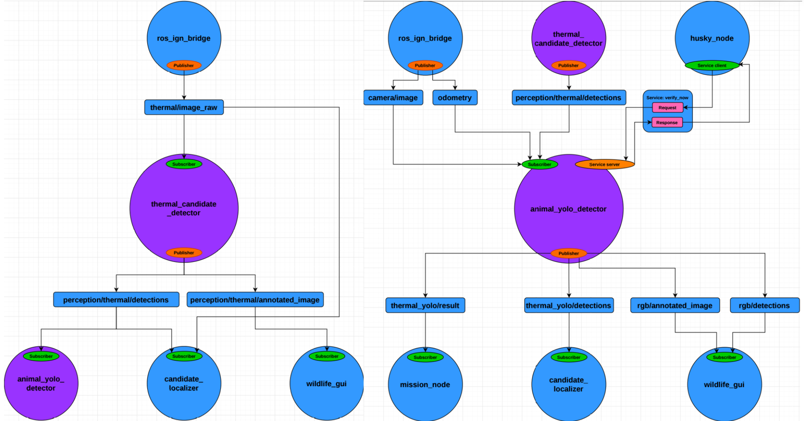
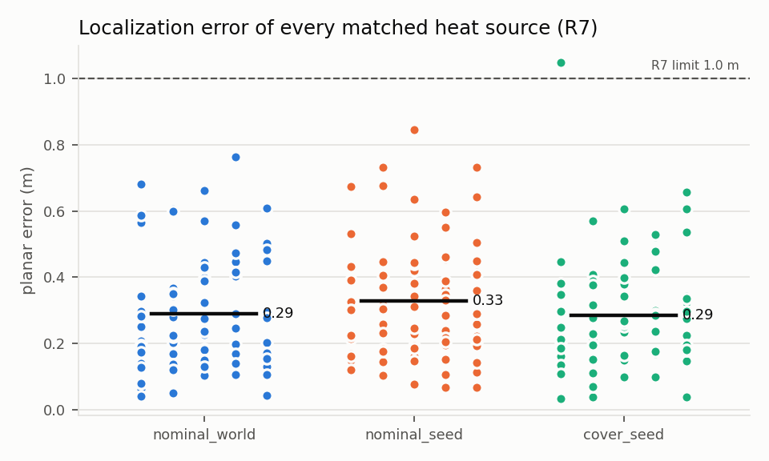
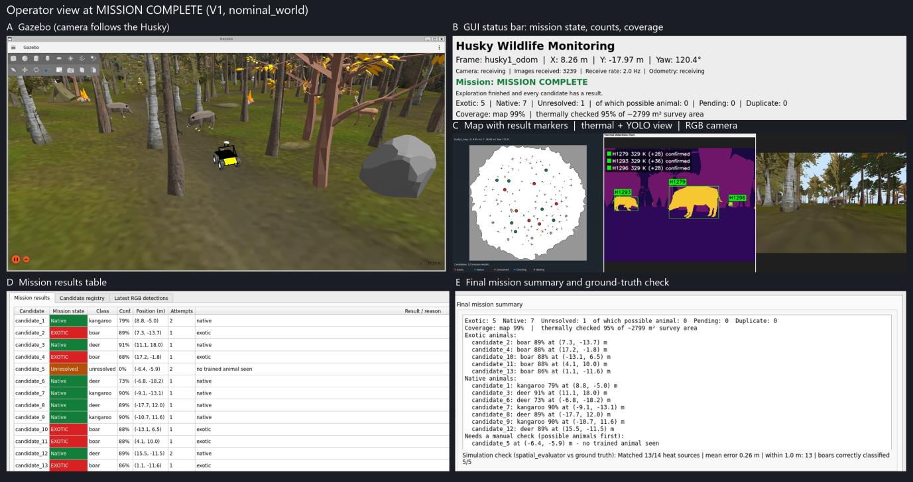

Wild Track: a Husky that finds feral boars by their heat
Robotics Studio 1, team of five. A Husky ground robot in a simulated forest maps the area, flags every warm object with a thermal camera, drives in close and decides with YOLO whether it is an exotic boar or a native deer or kangaroo. I led perception: the thermal camera, the heat-source detector, the YOLO model and the verification logic.
- Role
- Perception lead · team of 5
- When
- Aug — Nov 2026
- Stack
- ROS 2 Humble · Gazebo Fortress · YOLO11s · Python
- Result
- 87 / 90 boars confirmed · no false boar reports
The brief: miss as few boars as possible
Feral pigs damage native bushland, and foot surveys are slow and easy to miss in dense forest. Our stakeholder, a park ranger, set one priority: miss as few exotic animals as possible, and keep a clear record of anything the robot cannot confirm instead of guessing.
The robot explores on its own with LiDAR and SLAM, pauses whenever the thermal camera finds something warm, drives to an observation point, classifies it, then carries on. When exploration ends it sweeps any area the thermal camera has not seen yet and returns to its start point.
- World
- 90 trees · 5 boars · 4 deer · 3 kangaroos · 2 campfires
- Temperatures
- Ground 293 K · trees 300 K · animals 322–328 K · fire 330 K
- Sensors
- LiDAR · RGB-D · thermal · IMU


Finding heat: a threshold that moves with the scene
I added a 320 × 240, 60°, 10 Hz thermal camera to the Husky and wrote thermal_candidate_detector. Each frame it estimates the background from the 75th percentile of pixel temperatures and marks pixels at least 10 K warmer as hot. A 3 × 3 opening and closing removes noise, regions under 30 px are dropped, and each region must also beat its own surroundings by 10 K.
A region is only published after it appears in three consecutive frames, and it keeps the same ID while it is tracked. The detector went through four versions: a 3–5 K margin fired on sun-warmed trees, a fixed 315 K cut-off missed cooler animals, and a median background dropped when cold sky filled the frame, which pulled in tree pixels. Moving to the 75th percentile cut the localiser’s mean error from 0.71 m to 0.37 m.
- Hot pixel
- ≥ 10 K above 75th-percentile background
- Min region
- 30 px · 3 consecutive frames
- Error fix
- 0.71 m → 0.37 m

Naming it: YOLO, but only after five frames agree
Heat alone cannot tell a boar from a deer or a campfire, so the robot drives in and asks YOLO. I captured about 1,200 images from the Husky’s own camera in Gazebo, labelled 2,223 boxes in Label Studio and fine-tuned YOLO11s for 60 epochs. On 120 held-out images it reached 93% precision, 92% recall and 95.5% mAP50.
At runtime, animal_yolo_detector maps the thermal box onto the wider colour image and only accepts a YOLO box that matches it. Frame pairs are discarded if the two cameras are more than 0.15 s apart or the robot is turning faster than 0.35 rad/s (about 3° between captures). A species is confirmed only when it wins three of five frames at a mean confidence of 0.70 or more. Otherwise the robot moves closer (3.5, 3.0, then 2.5 m) and tries again, and after three attempts it records the source as unresolved, with the reason: too far, partly in view, or no trained animal seen.
- Dataset
- 1,200 images · 2,223 boxes
- Validation
- P 93% · R 92% · mAP50 95.5%
- Confirm
- 3 of 5 frames · mean conf ≥ 0.70
- Too far
- < 18 px tall (≈ 9 m)

Testing: 18 missions against ground truth
I wrote 16 unit tests for the perception code and ran the evaluation batches: 12 missions on 19 October and 18 on 2 November, six each on the fixed world, random layouts and animals hidden beside trees. Each run had 14 heat sources. I produced the results tables, the confusion matrix and the figures for the final report.
- Boars confirmed exotic
- 87 / 90 (97%)
- Exotic reports correct
- 87 / 87
- Heat sources found
- 244 / 252 (96.8%)
- Location error
- 0.30 m mean · 243 / 244 within 1 m
- Missions
- 18 / 18 complete · 17 / 18 home


What it got wrong: campfires
The campfires were there on purpose: warm, but not animals. 26 of 36 were correctly left unresolved, but 9 were labelled as native animals (8 kangaroos, 1 deer). None was ever called a boar. My validation set only contained the three trained classes, so a 95.5% score said nothing about objects the model had never seen. Animals standing beside trees were also found less often (93% against 99%).
The fix I would build next is a second check before accepting a label: is this surface temperature, shape and size plausible for that species? Plus a test set that deliberately includes things the model was never trained on.
- Campfires
- 26 unresolved · 9 mislabelled · 1 missed
- Occlusion
- recall 0.93 vs 0.99
What I would explore next
Three questions came out of this project: tracking an animal that moves behind a tree and reappears; rejecting heat sources the model was never trained on instead of labelling them; and using reinforcement learning to let the Husky choose a better viewpoint when YOLO’s votes disagree.
Result